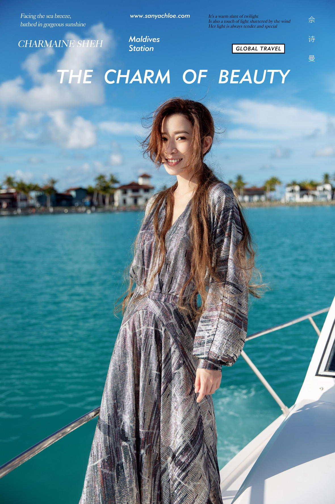

- NEWS
-
- Hotline/热线电话
- 咨询热线：40003-520-99
- 客服电话：131-1895-0692
- Online Service/在线客服
- Hours/服务时间
- 8:00 AM-23:00 PM

9月底克洛伊受邀为演员佘诗曼拍摄了时尚大片，深受明星喜爱的克洛伊明星摄影师李明歌
此次受邀前往马尔代夫为佘诗曼定制拍摄，再一次收获明星好评。
“用纯净的摄影技术去完成镜头里所特具的美感与幸福”
克洛伊全球旅拍明星摄影师李明歌用95后年轻人的想法重新定义旅拍摄影，
坚持独立性创作没有经过修饰的情感镜头影像，年轻与活力、新颖与独特的质感艺术。依靠摄影的自身特性，
用专业的审美价值充分发挥摄影的自身特性所创造出美。
9月底克洛伊受邀为演员佘诗曼拍摄了时尚大片，深受明星喜爱的克洛伊明星摄影师李明歌
此次受邀前往马尔代夫为佘诗曼定制拍摄，再一次收获明星好评。
这次拍摄，李明歌根据佘诗曼所喜欢的风格进行场景的选定，对如何用镜头突出阿佘风格和特点进行了整体构思。
突破空间、时间的限制，在一个画面中细腻地刻画了佘诗曼情绪的转换、马代景调的组合和构图的变化，极有韵律感，
这一切的构造都展现了李明歌极高的职业素养。
提起佘诗曼，大家可能最先想到的大多是她的影视作品。
作为一名演员，不仅拍戏敬业，还有着令人称赞的好演技。
无论是《延禧攻略》里敢爱敢恨的娴妃，《金枝欲孽》里沉郁内敛的尔淳，还是《宫心计》里心地善良的刘三好，
《使徒行者》里聪明义气的卧底警察。阿佘都用演技诠释着不同的角色，
让这些个性鲜明的形象在大家的心里变得鲜活。
美丽大方的佘诗曼，靠实力圈粉，同时也拥有超高颜值。
与以往塑造的角色不同，这次面对镜头，她展现真我，用多角度的美，带给人怦然心动的感觉。
乘坐游艇航行海上，佘诗曼侧身而立，身后是波光粼粼的水面，
她一头长发配长裙，风姿卓越，知性优雅，妥妥的让人疯狂比心。
水屋前，佘诗曼身穿孔雀蓝连衣裙，惬意的躺在木质躺椅上休憩，
闭目享受轻松愉快的假期，周围的景色也因为她变得愈加安静美好。
延伸到海中央的木板栈道上，佘诗曼翩然漫步，一袭香槟色吊带连衣裙衬出她的温婉柔美，
低扎的马尾辫，更是洋溢着清灵可爱的少女感。
站在绿植前，佘诗曼一身的V领白色长裙，以花草印花点缀，灯笼袖的设计，
更显公主气息。她侧脸微扬，将简约清新与优雅气质完美融合。
沁蓝的海岸旁，红色波点连体裤与海的色彩形成撞色，打造复古look，
更具时尚大气，齐腰的马尾，精致的妆容更为佘诗曼增添几分小女人的妩媚。
镜头下的佘诗曼，皮肤紧致，细腻光泽，穿搭时尚，可美可甜。通过摄影师的定格，轻松美回18岁。
记录自信与优雅，彰显年轻与活力，通过美丽的帧幅与画面，我们看到了阿佘的百变魅力，
定格了温柔、性感、优雅、知性、甜美的她，港姐魅力满分！
出道22年，她一路成长，一路收获。
在这份看得见的幸运背后，是不断的拼命努力，
她也由此塑造一个又一个经典角色，成为广受观众喜爱的“最佳女主角”。

岁月不败，美人依旧，热爱工作，也享受生活，
佘诗曼用挑战自我、绝不认输的精神告诉我们，
什么是演技派与颜值派兼备的实力型演员。
明星代言不如明星选择
拍的美的才叫婚纱照
克洛伊全球旅拍
明星选择的旅拍摄影品牌
拍的美的才叫婚纱照
克洛伊全球旅拍
明星选择的旅拍摄影品牌
标签：
来源：三亚婚纱摄影
上一篇：